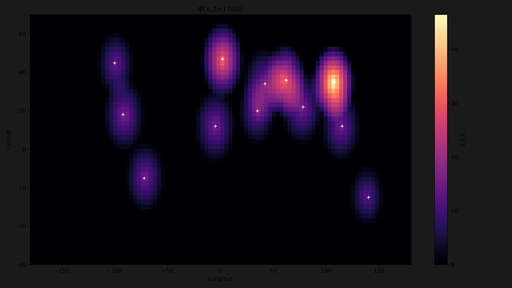
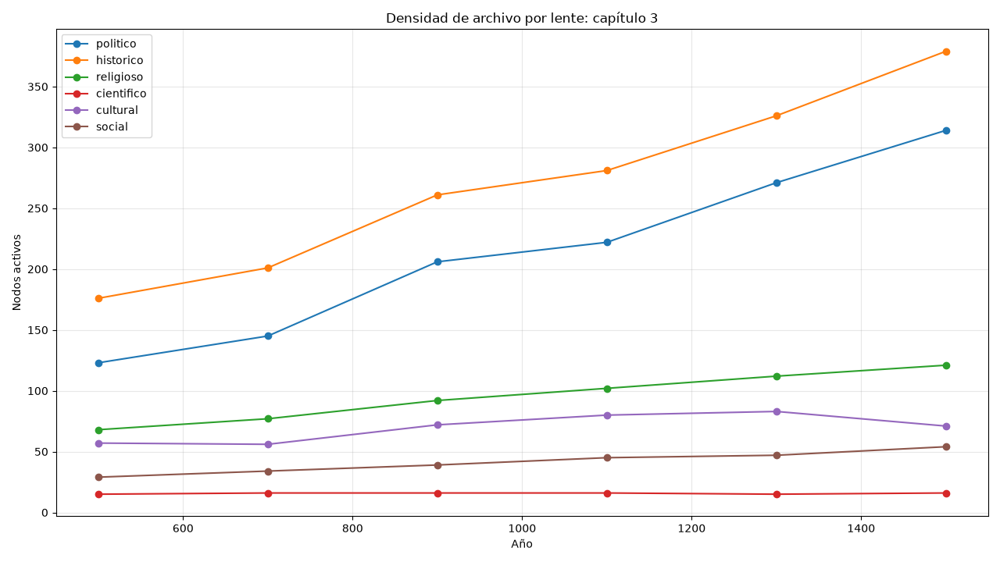
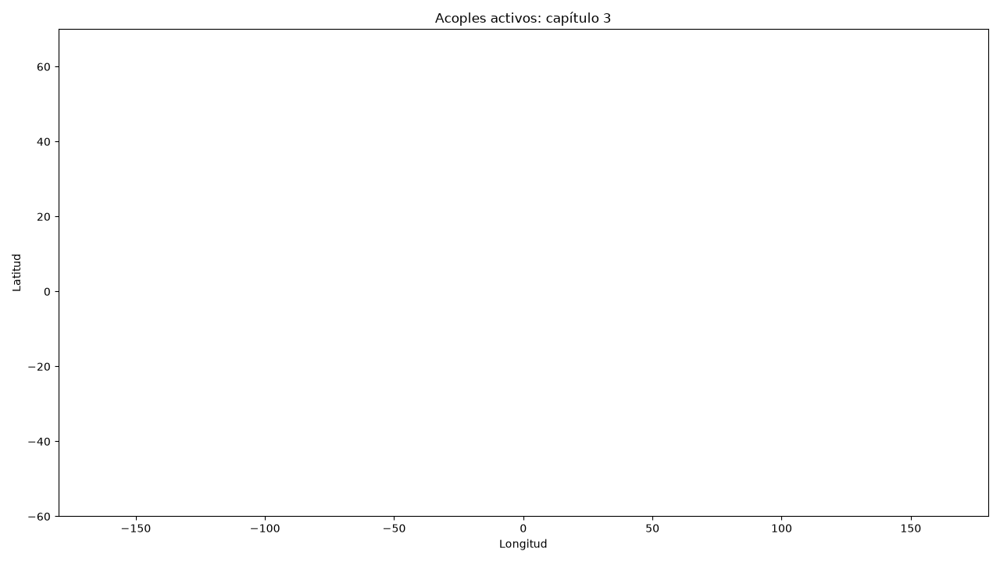

Del origen del ser humano a 2026, narrado a través del modelo espaciotemporal.
Índice
Secuencia 1080p60 de Φ(x,t) desde -3000 hasta 2000. Nota: los conos son polidades datadas, no civilizaciones eternas.
Encuentros y solapes (500 a 1500)
Calzada de la Seda, Islam, imperios mongoles, Mesoamérica clásica.
La Calzada de la Seda, el mundo islámico, los mongoles, el mar de la China y las polidades mesoamericanas (Teotihuacan, Tula, Tenochtitlan) solapan sus intervalos. Aquí la red A_t muestra el máximo de conectividad política del milenio 500–1500.
Ecuaciones aplicadas
C = (W_C, F_C) z_C(x,t) = H · max(0, 1 − dist/R) Φ(x,t) = Σ_C z_C(x,t)
La sábana Φ se calcula con los conos activos y sus intervalos datados. En este segmento hay 19 conos activos y 1215 nodos en la ventana.
Conteos por lente
Lente
politico
historico
religioso
cientifico
cultural
social
Nodos
702
984
141
31
127
62
Top nodos por lente
politico
Tierras altas de Nueva Guinea (-4000–2026, oceania)
Ártico (-2000–2026, am-north)
China (-1600–2026, easia)
Corea (-700–2026, easia)
Huasteca (-1000–1520, meso)
Japón (-300–2026, easia)
Roma (-753–1453, eu-west)
Tamtok / Tamtoc (-600–1500, meso)
Lamanai (-400–1675, meso)
Manipur / Ningthouja (33–1949, sasia)
historico
Humanidad (especie, clima, fe, ciencia, orden mundial) (-7000000–2026, humanidad)
Magreb (-145000–2026, maghreb)
Oceanía y Pacífico (-65000–2026, oceania)
África central y austral (-40000–2026, af-cs)
Artes visuales-ancla (-30000–2026, humanidad)
América del Norte y Ártico (-13000–2026, am-north)
Mesoamérica y Caribe (-13000–2026, meso)
Clima del Holoceno (-11700–2026, humanidad)
Aislamiento de Tasmania (-8000–1803, oceania)
Asia meridional (-7000–2026, sasia)
religioso
Campo religioso (-40000–2026, None)
Dreaming / Tjukurpa (-40000–2026, None)
Cosmología San / ǃKung (-20000–2026, None)
Cosmologías indígenas (-10000–2026, None)
Campo índico (-1500–2026, None)
Cosmología mesoamericana (-1200–2026, None)
Tradiciones iranias (-1200–2026, None)
Zoroastrismo (-1000–2026, humanidad)
Yahvismo / judaísmo (-1000–2026, humanidad)
Tradiciones de Norteamérica (-1000–2026, None)
cientifico
Campo científico-técnico (-3000000–2026, None)
Género Homo (-2800000–2026, humanidad)
Migraciones homininas (-2100000–1500, humanidad)
Homo sapiens (-300000–2026, humanidad)
Cosmología San / ǃKung (-20000–2026, None)
Tradiciones Khoe-San (-20000–2026, af-cs)
Demografía (-10000–2026, None)
Holoceno australiano (-10000–1788, oceania)
Familias lingüísticas (ancla) (-8000–2026, None)
Aislamiento de Tasmania (-8000–1803, oceania)
cultural
Poblamiento de Sahul / Australia aborigen (-65000–2026, oceania)
Campo religioso (-40000–2026, None)
Dreaming / Tjukurpa (-40000–2026, None)
Campo cultural (-40000–2026, None)
Tradiciones Khoe-San (-20000–2026, af-cs)
Cosmologías indígenas (-10000–2026, None)
Familias lingüísticas (ancla) (-8000–2026, None)
Escritura como técnica (-3200–2026, None)
Cánones literarios (-2100–2026, None)
Campo índico (-1500–2026, None)
social
Migraciones homininas (-2100000–1500, humanidad)
Campo religioso (-40000–2026, None)
Tradiciones Khoe-San (-20000–2026, af-cs)
Campo social (-10000–2026, None)
Parentesco y género (-10000–2026, None)
Demografía (-10000–2026, None)
Holoceno australiano (-10000–1788, oceania)
Esclavitud y servidumbre (-3000–2026, humanidad)
Patrilinealidad de Estado (-3000–2026, None)
Trabajo, esclavitud, casta (-3000–2026, None)
Red de acoples
Radio espectral aproximado de A_t en el año medio: ρ(A) ≈ 0.0.
Variación Wasserstein aproximada entre inicio y fin del segmento: W₁ ≈ 0.0177.
Mesoamérica solapada
Relaciones de Allen entre polidades mesoamericanas:
san-lorenzo ↔ la-venta: precedes
san-lorenzo ↔ cuicuilco: precedes
san-lorenzo ↔ el-mirador: precedes
san-lorenzo ↔ teotihuacan: precedes
san-lorenzo ↔ tenochtitlan: precedes
la-venta ↔ cuicuilco: overlaps
la-venta ↔ el-mirador: overlaps
la-venta ↔ teotihuacan: precedes
la-venta ↔ tenochtitlan: precedes
cuicuilco ↔ el-mirador: overlaps
cuicuilco ↔ teotihuacan: overlaps
cuicuilco ↔ tenochtitlan: precedes
el-mirador ↔ teotihuacan: overlaps
el-mirador ↔ tenochtitlan: precedes
teotihuacan ↔ tenochtitlan: precedes

Mapa georreferenciado de Φ en el año medio del segmento.

Densidad de nodos por lente a lo largo de años muestra.

Acoples activos en la ventana temporal.
Lo que el modelo no deja decir: el corpus mide densidad de archivo, no intensidad histórica real. La georreferenciación es una proyección de investigación, no una constante del modelo. A^n u es un escenario, nunca una predicción.